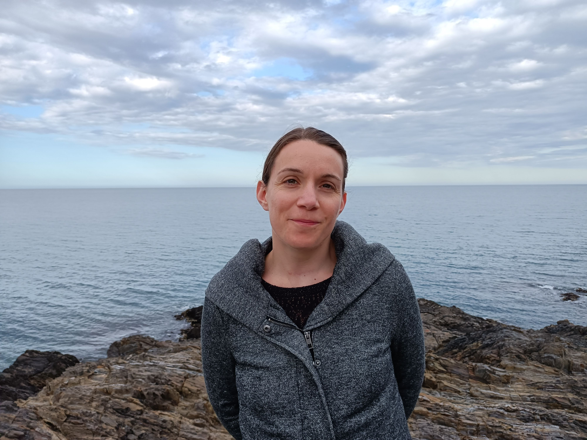

Préparez votre consultation en quelques minutes. Le parcours sélectionne automatiquement le bon questionnaire selon l'âge de votre enfant.
Infos enfant · Suivi médical · Agenda · Questionnaire SDSC · PDF
Accès direct : 6 mois – 4 ans · 4 – 16 ans

Médecin Généraliste — Troubles du Sommeil de l'Enfant & Neurodéveloppement
Avant d'être médecin spécialisée dans le sommeil de l'enfant, j'ai d'abord été une mère comme vous.
Au sein de ma propre famille, j'ai vécu ces nuits qui s'étirent, ces journées à fonctionner à moitié, et ce doute qui s'installe. Et j'ai entendu, comme vous l'avez peut-être entendu : « C'est normal, elle finira bien par faire ses nuits. »
Ce commentaire, je ne le juge pas — il est souvent dit avec bienveillance. Mais derrière lui, il y a des parents qui souffrent en silence, et des enfants dont les difficultés réelles passent inaperçues.
C'est ce vécu qui m'a conduite à me former spécifiquement aux troubles du sommeil de l'enfant. J'ai appris à ne jamais aborder un trouble de façon isolée, mais à prendre en compte l'enfant dans sa globalité — son développement, son environnement, son histoire familiale — pour poser le bon diagnostic, donner la bonne orientation, ou simplement le conseil qui change tout.
Aujourd'hui, des familles viennent me consulter depuis Nantes, Poitiers ou Bordeaux. Ce déplacement, je le mesure. Il me rappelle chaque jour pourquoi j'ai choisi ce chemin.
Pôle Santé — 2ème étage
36 rue du Moulin des Justices
17138 Puilboreau
Secrétariat : 09 73 03 05 76
Comment ça fonctionne ?
Un parcours guidé en quatre étapes pour préparer votre visite
Votre enfant
Renseignez la date de naissance — le bon questionnaire est sélectionné automatiquement
Agenda du sommeil
Téléchargez et remplissez l'agenda 2 semaines avant la consultation
Questionnaire
22 ou 25 questions · basées sur les 6 derniers mois · environ 4 minutes
PDF & Consultation
Téléchargez votre rapport et apportez-le au Dr AIME